Bootloader Example Using the CAN Physical Layer and TA100 ECDSA Verify
Introduction
This example shows how to use the pre-configured CAN demo on the dsPIC33CK256MP508 processor module for the Explorer
16/32 board with TA100 ECDSA signature verification to bootload an application via CAN.
This demo uses the ISO 15765-2 CAN Transport Protocol layer to transport custom bootloader commands over the CAN bus
as seen in the diagram below:

Tools
Software
- THIS PROJECT REQUIRES A NON PUBLIC COPY OF THE CRYPTOGRAPHIC AUTHENTICATION LIBRARY(CAL) FOR TA100 SUPPORT! CONTACT MICROCHIP TO OBTAIN A COPY. YOU MUST REQUEST VERSION CryptoAuthLib 3.2.5 ONLY. Versions 3.3.x are not compatible with this demo.
- The unzipped example project files, boot.X and app.X
- Microchip MPLAB® X version 5.40 or later
- Microchip MPLAB® XC16 C compiler version 1.60 or later
- Unified Bootloader Host Application v1.17.0 or later
- Microchip MPLAB® Code Configurator version v4.0.1 or later (optional – for code configuration)
- 16-bit Bootloader MCC module version 1.18.3 or later (optional – for code configuration)
- The drivers for the selected Peak CAN-FD protocol analyzer/protocol generator (available at https://www.peak-system.com/Home.59.0.html?&L=1)
Hardware
- Explorer 16/32 Demo board
- dsPIC33CK256MP508 Processor module
- A programmer/debugger of choice
- A Peak CAN protocol analyzer/protocol generator. A PCAN-USB FD was used for development of this demo
(https://www.peak-system.com/PCAN-USB-FD.365.0.html?&L=1).
- A CAN cable
- A CAN-FD bus terminator (or modify the Peak analyzer per their user's guide for proper CAN-FD termination).
- An MCP2542 click board (https://www.mikroe.com/mcp2542-click) or another appropriate CAN-FD transceiver click
board.
It is important that this is just a transceiver and not a CAN-to-SPI/UART converter chip.
- A micro USB cable, a USB-Type C cable, or a 9v power adapter for the Explorer 16/32 (for powering the board).
- TA100 Trust Anchor external HSM 14-pin SOIC
- TA100 14-Pin SOIC CryptoAutomotive™ Socket Board
Running the Demo
Hardware Configuration
- With the Explorer 16/32 detached from any power source, programmer, or USB connection:
- Connect the dsPIC33CK256MP508 processor module into the socket on the Explorer 16/32 such that the notched
edge is
in the top left corner matching the silk screen on the Explorer 16/32
- Connect the TA100 14-Pin SOIC CryptoAutomotive™ Socket board into the mikroBUS™ A slot.
- Connect the MCP2542 daughter board into the mikroBUS™ B slot.
- Connect the programmer to the Explorer 16/32
- Connect the Peak analyzer/generator to your computer.
- Connect the Peak analyzer/generator to the MCP2543 daughter board with the CAN cable.
- Power the board using either USB cable or the 9 volt adapter plug.
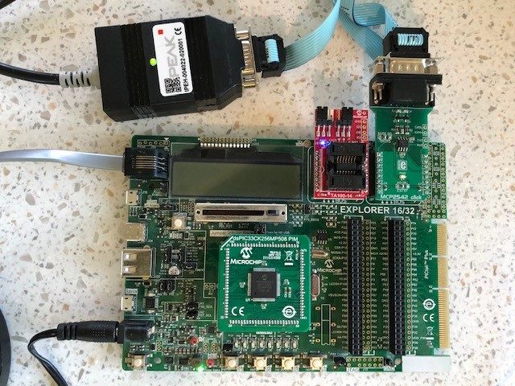
Programming the Bootloader
- Open the boot.x project in MPLAB® X
- Copy and paste the TA100 support Cryptographic Authentication Llibrary(CAL) into the mcc_generated_files folder replacing all placeholder files within.

- Press the “Make and Program” button on the top bar.
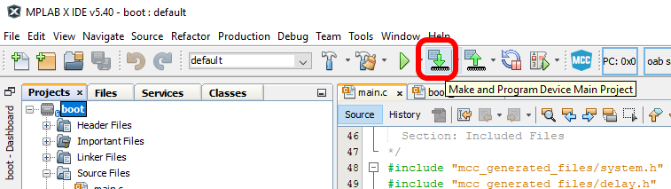
- Select the appropriate programmer if prompted.
- The project should compile and program successfully.
- Verify the D3 LED is solid on the Explorer 16/32. This indicates the bootloader is running.
Building the Application
- Open the app.X project in MPLAB® X
- Press the “Clean and Build Project” button on the top bar.
NOTE: Make sure not to hit the program button. This will program the application code over the bootloader
that was just programmed.
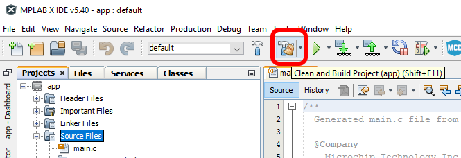
- The project should compile cleanly. app.X/dist/default/production/app.X.production.hex should be generated.
- Verify that the D3 LED is still solid.
- If the D3 LED is blinking instead of D3 solid, then the application code was programmed instead of only
compiled.
Go back to the “Programming the Bootloader” stage and re-program the bootloader.
Loading the Application
- Open the Universal Bootloader Host Application tool (UBHA)
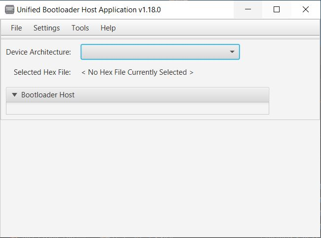
- Select the “PIC24/dsPIC” option from the “Device Architecture” selection drop down
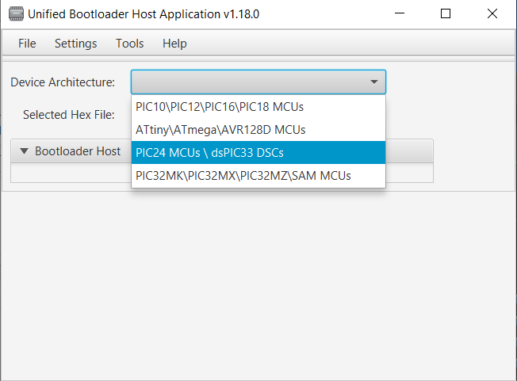
- Select “CAN” from the protocol drop down selection box:
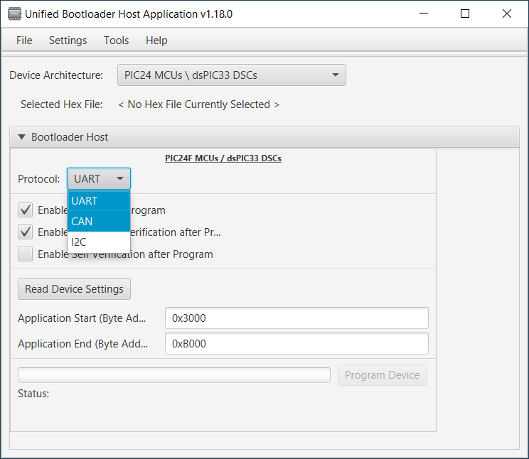
- Select the “Settings->CAN” option from the top menu
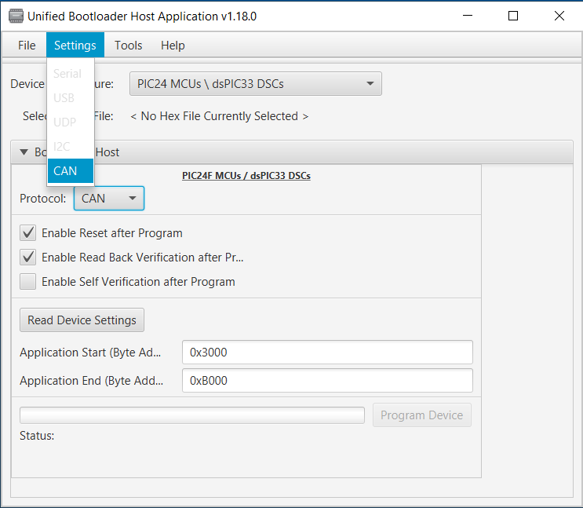
- Select the Peak protocol analyzer being used and the appropriate CAN configuration settings for this demo (listed below). When complete, press “Apply”:
- Nominal bit rate: 500 kbits/sec
- CAN-FD: enabled
- CAN-FD Data Length: 64 bytes
- Flexible Data Rate: Enabled
- Flexible Data Rate: 2Mbit/sec
- Message ID Format: Standard
- Host to device ID: 0xA1
- Device to host ID: 0xA2
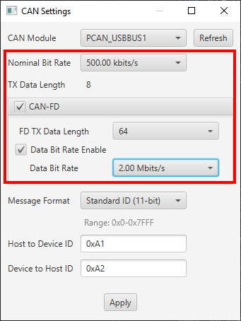
- Press the “Read Device Settings” button.
- The Application start address and Application end address fields should have updated. If it did not or if you
get a
communication error, please go back to the “Programming the Bootloader” stage to make sure the bootloader was
programmed correctly.
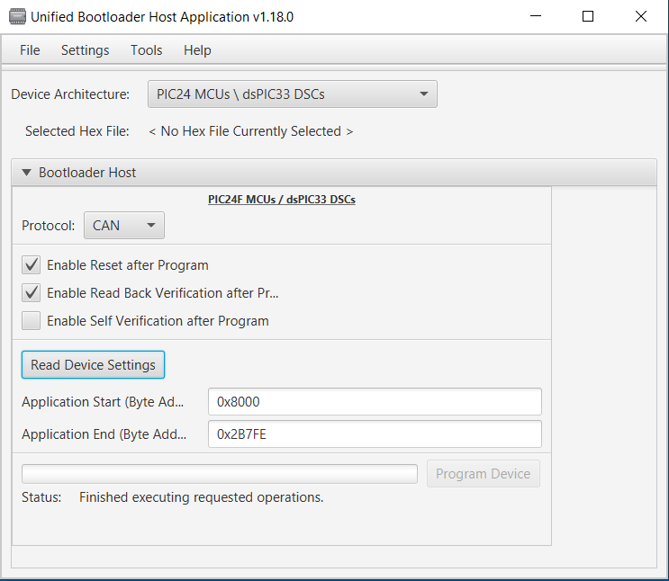
- Load the application hex file by selecting “File->Open/Load File (*.hex)”
- Select the file generated in the previous section: app.X/dist/default/production/app.X.production.hex
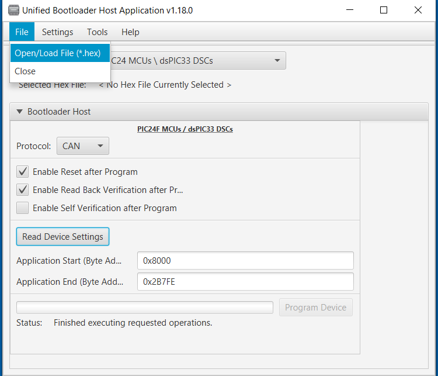
- Check the "Enable Self Verification After Program" checkbox
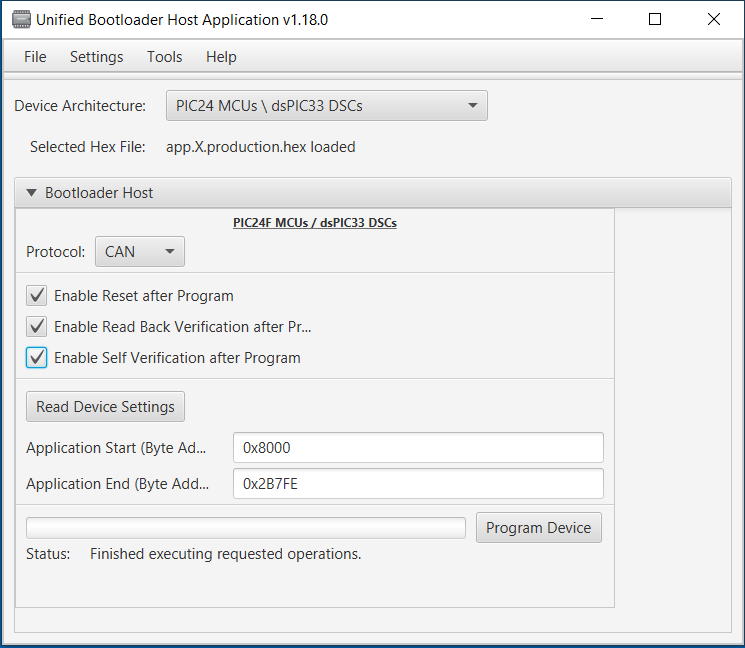
- Press “Program Device”. The application should program erase, program and perform a self verify using the TA100 for an ECDSA verify then read back verify correctly.
- After a few seconds, D3 should be blinking.
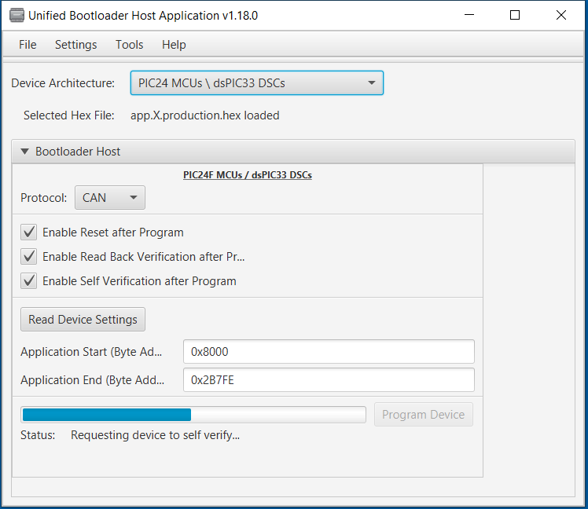
Known Limitations
- Only CAN-FD is supported. For CAN Classic support, use the CAN demo as a starting point instead.
Terminology
ISO 15765-2 / CAN-TP / ISO-TP
ISO 15765-2 is a transport protocol layer designed for usage with the CAN bus. The original CAN bus specification
allows for up to 8 bytes of data to be in a single frame. Larger messages need to be fragmented into smaller frames
for transmission on the CAN bus. ISO 15765-2 defines a protocol for fragmenting larger messages and sending them
over the CAN bus. It also incorporates flexibility in handling the data transmission through the use of flow control
packets to control the frequency of when packets arrive as well allowing to pause the transmission of a message
until the receiver is ready to receive the message.
MCC
Microchip’s MPLAB® Code Configurator tool. This tool helps configure and generate source code for peripherals and
libraries.
UBHA - Unified Bootloader Host Application
The PC application used to send the firmware update and verification commands
from the PC to the board to complete the firmware update.
Trademarks
MPLAB® is a registered trademark of Microchip Technology Inc. All other trademarks are the property of their
respective owner.